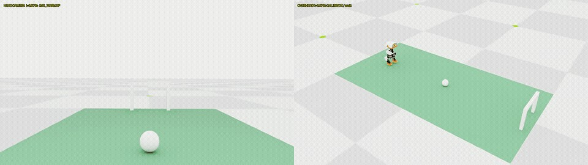

SELF-PACED WORKSHOP
完成自主射门
加载同一套固定模型，让感知、导航、出脚与恢复协同工作，并按完整任务判定结果。
先看清完整系统
这不是一个单独网络直接输出“进球”。固定行走策略控制身体，检测器提供视觉目标，距离与姿态约束帮助估计相对位置，状态机决定何时观察、行走和踢球，踢球组合负责出脚与恢复。
- 1RGB + ToF + IMU
- 2目标估计
- 3导航与对准
- 4固定踢球组合
- 5任务判定

运行完整教学场景
python3 scripts/workshop.py football \
--seed 983102 \
--seconds 180 \
--output outputs/football-01预期结果：Isaac 仿真窗口打开，一台机器人自主完成找球、接近、对准和射门。程序使用仓库中的固定模型，并保存视频、轨迹与结果。180 秒是仿真任务预算，不是电脑上的等待时间；首次初始化和渲染可能需要更久。
这个种子用于教学观察，已经从成功示例中选出。它帮助你比较相同场景，不应再作为新的独立成功率样本。运行过程中不要手动移动机器人或球；需要中止时在终端按 Ctrl+C，保留已产生的日志。
判断“完整成功”
python3 scripts/workshop.py report --run outputs/football-01- 确实发生足部与球的接触。
- 整个球越过球门线，并位于有效门框内。
- 机器人没有摔倒，动作没有超出规定机械范围。
- 没有在正式出脚前意外碰球，踢完后恢复站稳。
设计自己的小评测
先写下测试种子与成功标准，再开始运行。至少把每个回合的进球、摔倒、触球和恢复情况填入记录；失败不能悄悄重跑后替换。改变模型或参数后，应当作为另一组实验比较。
python3 scripts/workshop.py football \
--seed 990001 \
--seconds 180 \
--output outputs/football-new-seed-01检查理解
检测器 mAP 很高、行走模型也能保持站立，为什么整次任务仍可能失败？
查看解析
完整任务依赖模块之间的交接：目标可能暂时不可见，坐标或观测时效可能不合适，站位和朝向也可能不满足出脚条件。各模块指标不能代替端到端评测。
结课练习：交一份可复核的结果
先运行默认教学情形并保存完整输出。提交一段简短说明：模型来自哪里、种子和时间预算是什么、最终是否通过、你从两个视角观察到了什么。若失败，保留失败目录并定位到感知、接近、触球、进门或恢复中的一个阶段。不要为完成作业反复重跑后只交最好的一次。
有更多计算时间时，运行前先写下五个新种子，例如 990001–990005。每次使用相同固定模型、相同 180 秒预算和独立输出目录，逐个执行。记录所有五个结果，包括没有进球和程序异常；程序异常应单列原因，不能悄悄从报告中删除。五次样本只能作为小实验，统计不确定性仍很大。
| 记录项 | 示例或要求 |
|---|---|
| 模型 | 课程固定模型；保留 manifest 校验结果 |
| 运行参数 | seed、seconds、输出目录 |
| 行为 | 触球、整球越线、摔倒、恢复是否通过 |
| 证据 | result.json、轨迹、完整双视角录像 |
| 解释 | 一个观察到的现象，以及能支持它的证据 |
完成标准是能运行系统、解释环节职责并诚实判断结果，而不是在自己的短训练中复制课程全部性能。你已经知道怎样保留一个可用模型，怎样尝试新训练而不破坏基线，以及为什么一个局部指标不能代替完整任务。继续做真机实验前，还需独立标定传感器、检查执行器限制并重新验证控制接口。
你已经走过的路径
从机械结构出发，你连接了关节控制、强化学习、视觉感知、距离与姿态估计、导航和短技能。继续探索时，一次只改变一个明确因素，并保持模型、环境与结果记录能够对应。
从失败结果定位问题
先检查程序是否正常产生 result.json。如果没有，读取终端末尾的错误并排查安装或运行条件；这属于执行失败。若结果存在，再区分“没有找到球”“无法形成出脚站位”“球被碰到但未进门”“进门后未稳定恢复”等行为失败。一个程序正常退出，并不意味着机器人完成了目标。
结果中的 course_evaluation.passed 综合完整物理评分与相关复核；scorer 保存接触、越线和摔倒等信息。回看同步视角时，对照第一次触球前的站位以及出脚后的姿态。不要只截取球越线的几秒来判断全流程。
课程固定组合在已记录的空场独立测试中完成 9/10；这是特定环境、分布和时间预算下的历史结果。默认种子 983102 用于教学演示，重复运行它不构成新的独立成功率。自选种子、不同设备、障碍物或真实硬件都需要另外评测。